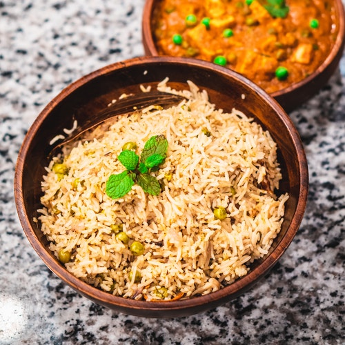

Spicy Rice
If you love rice, then you'll love spicy rice.

Ingredients
- 200g basmati rice
- 450ml cold water
- 2 tbsp sunflower oil
- ½ white onion, peeled & finely chopped
- 2 garlic cloves, crushed
- ½ green pepper, finely diced
- 1 small green chilli, thinly sliced
- ½ can chopped tomatoes
- ½ tsp ground turmeric
- ½ tsp cayenne pepper
- ½ tsp smoked paprika
- 1 tsp salt
- Juice from 1 lemon
- Small handful coriander
Steps
- In a sieve, wash the rice under cold water.
- On a medium heat, heat the oil in a saucepan that you have a lid for. Add the onion and salt. Cook for 5 mins until the onion softens.
- Add the garlic, chilli and green pepper. Cook for 5 mins until the pepper begins to soften.
- Add the turmeric, cayenne pepper and smoked paprika, and cook for 1 min until fragrant, then add the chopped tomatoes.
- Stir through the washed rice, and then pour in the water.
- Bring to the boil, cover with a tight fitting lid and turn heat to low. Cook for 10 mins.
- Without taking the lid off, turn the heat off and leave to stand for 10 mins.
- Stir through the lemon juice and coriander. Taste for seasoning.